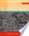

Web
Images
Videos
Maps
News
Shopping
Gmail
more
▼
Books
Finance
Translate
Scholar
Blogs
Realtime
YouTube
Calendar
Photos
Documents
Reader
Sites
Groups
even more »
mrshahman@gmail.com
|
My library
|
Help
|
My Account
|
Sign out
Advanced Book Search
Language: An Introduction to the Study of Speech
By Edward Sapir
0 Reviews
Write review
About this book
Add to My Library
▼
Get this book
DoverPublications.com
Amazon.com
Barnes&Noble.com
Books-A-Million
Find in a library
All sellers »
Related books

All related books »
Loading...
Pages displayed by permission of
Courier Dover Publications
.
Copyright
.
Page iii